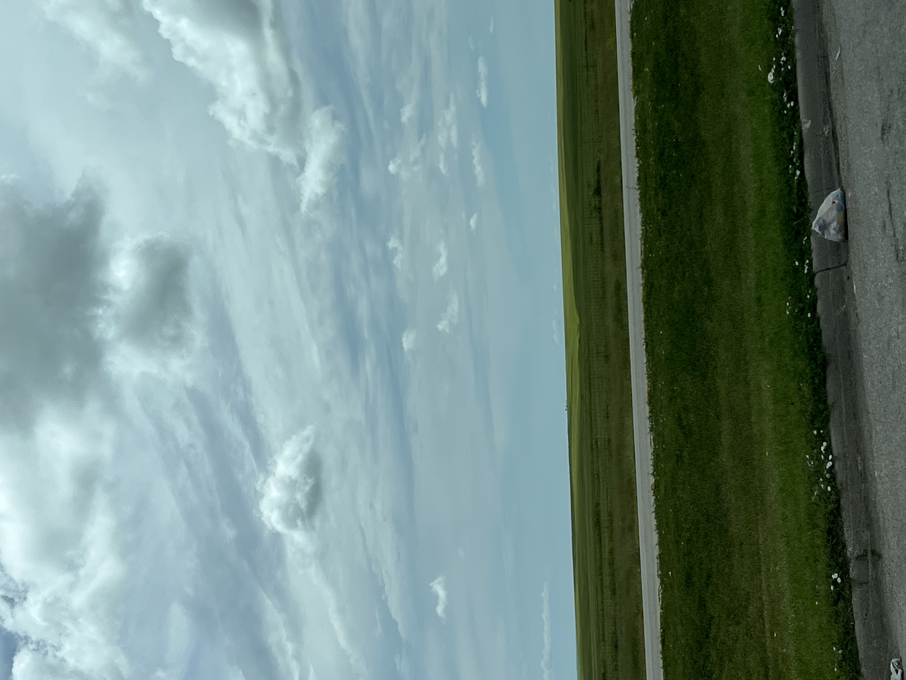
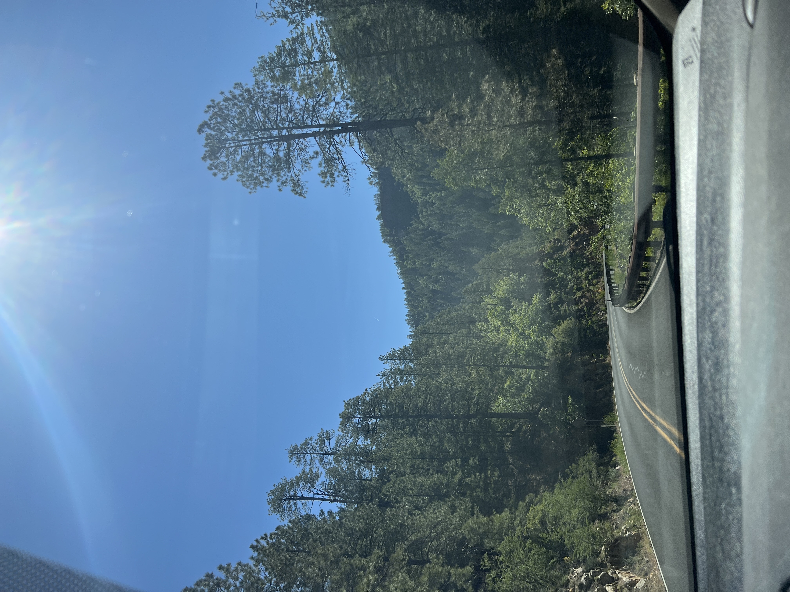
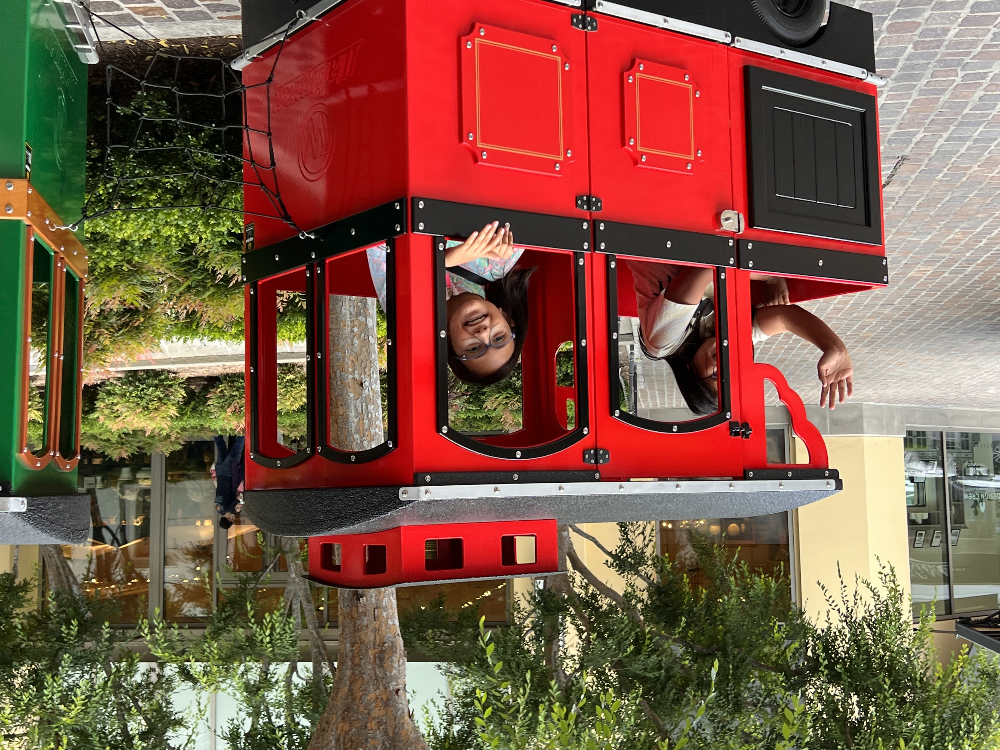
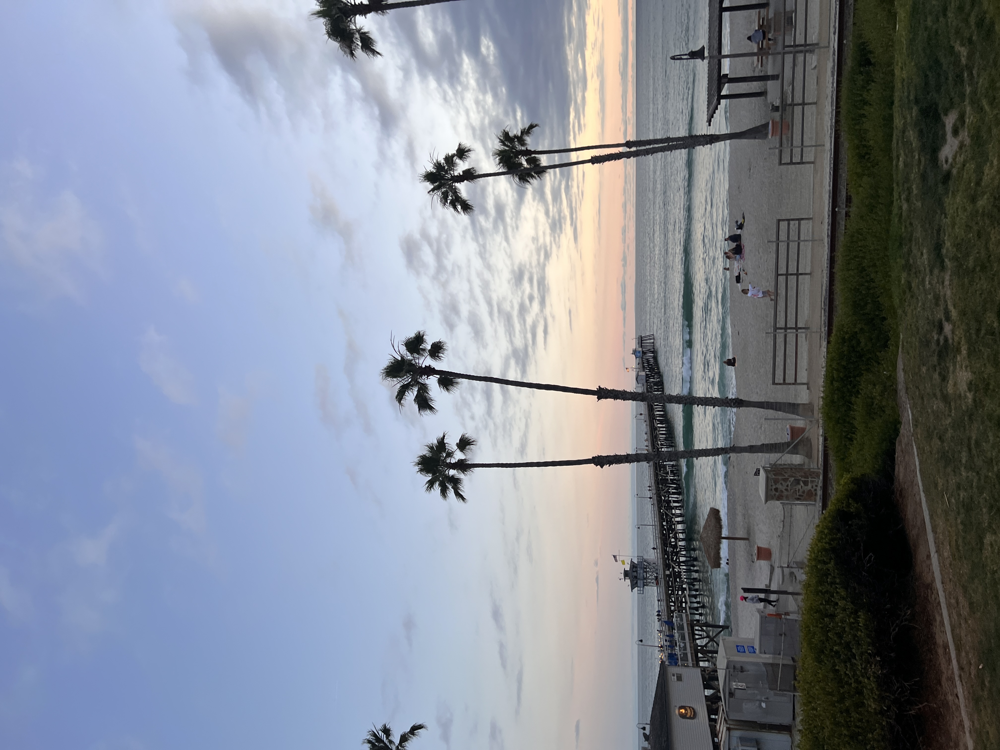
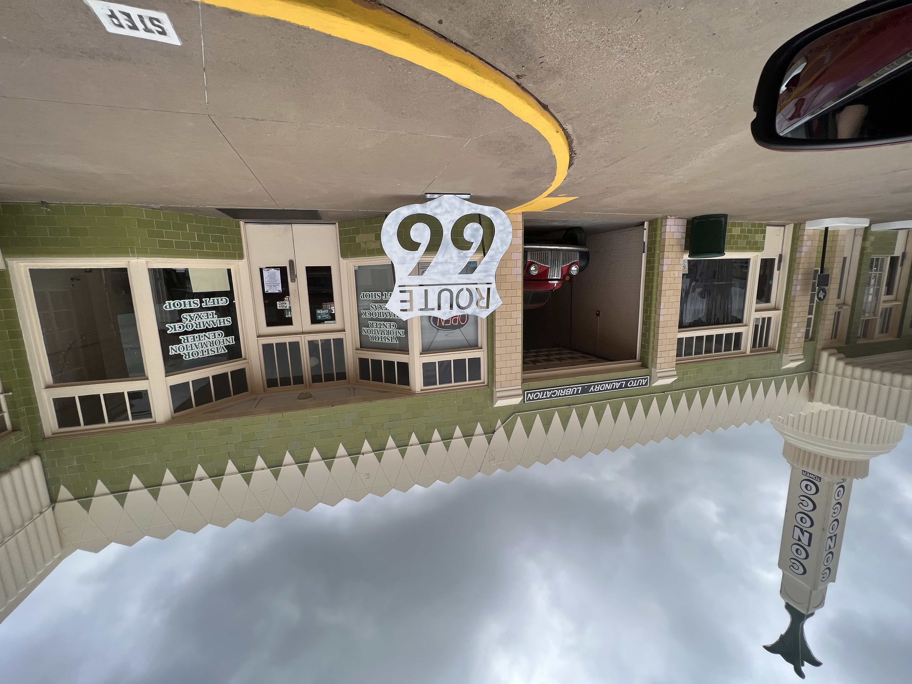

Day 1
We started out around 5am to head out to our first stop: Amarillo, TX.

Day 2
The next morning we got up and headed to our next stop, where we would be meeting up with my mother-in-law in Flagstaff, AZ. We made plans to stay the night there and go to Sedona the next day.

Day 3
We got up early to have breakfast before we went down to Sedona for the day. We had plans to visit Slide Rock to play around in the water, but it was unusually cold. We went site seeing to a differnt part of Sedona we haven't visited yet and had lunch down there.

Day 4
Waking up to a crisp 50 degrees was nice, despite not having brought much cold weather clothes. We had only about 5 more houses until we were back in our hometown of Victorville, CA. We made a stop at Del Taco and headed on "home".

Day 5-6
We visited family and went down to an outdoor mall that we frequent when we are in the area. They have trains that the kids can ride, so the little ones had to do that.

Day 7-9
We met up with my husband's side of the family and took a trip for a few days to the beach. We stayed in San Clemente, about 7 mins from the beach. We had so much fun relaxing and doing all the beach things we could. Hanging out in the morning at low tide to look for shells and pretty rocks was a must. Wish we had a week to spend there and take it all in.

Day 10-11
We went back to hang out with family for the last two days of our trip. It was a mixture of enjoying the moments we had, mixed with the dread of leaving and not know when we'd be back. This was one of the best trips we had been on, it was all about the family and not trying to juggle too much this time around.

Day 12
We said our goodbye's and headed out on our first part of our journey back to Kansas. We took the same route home, but stopped in different places this time. We stayed the night in Albuquerque, at the Air Force base there.

Day 13
In the morning we made a pit stop to see the Walter White's house from Breaking Bad and drove past the car wash from the show too. Then we headed on to the next stop, Oklahoma. We made it there in the late afternoon, so we did a little exploring and went shopping.

Day 14
It was finally the last day of driving and we were ready to be back home and out of the van. The last day was an easy one, we took our time that moring and headed out for the last 5 hours or so. I am so glad that we were able to take this trip with our family.